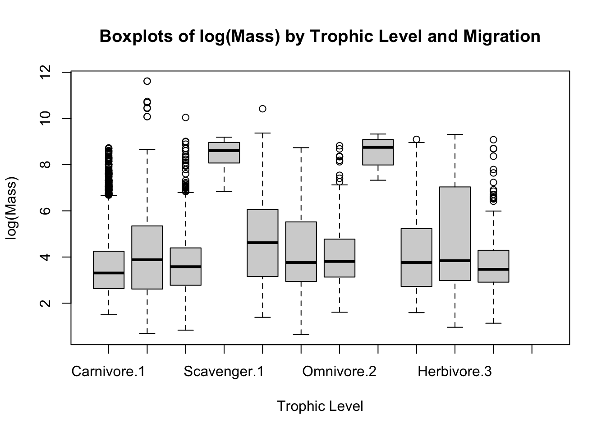
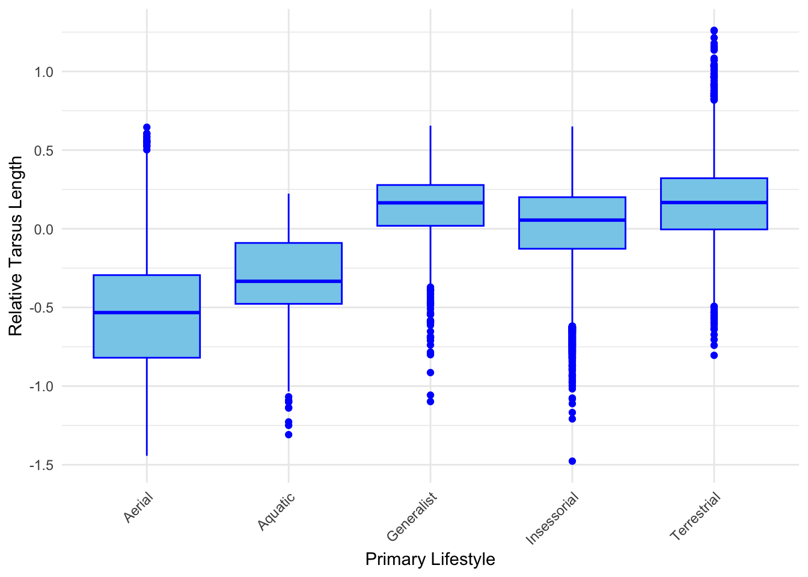
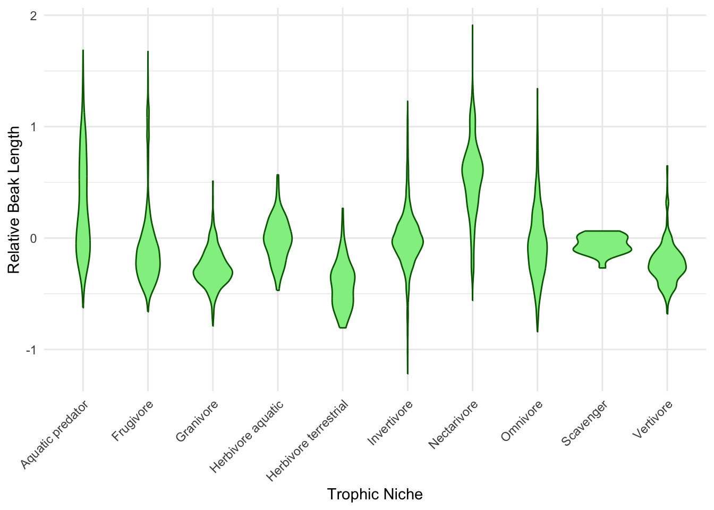
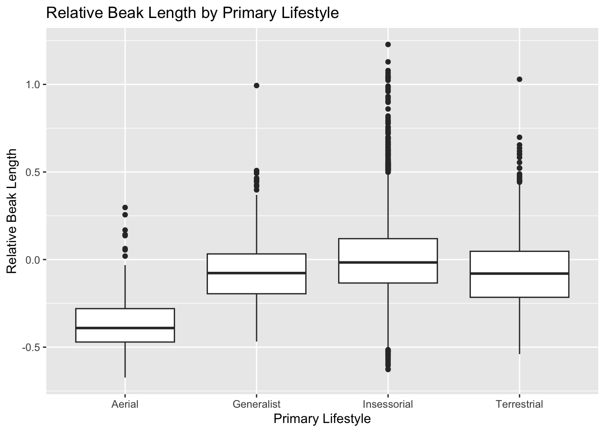
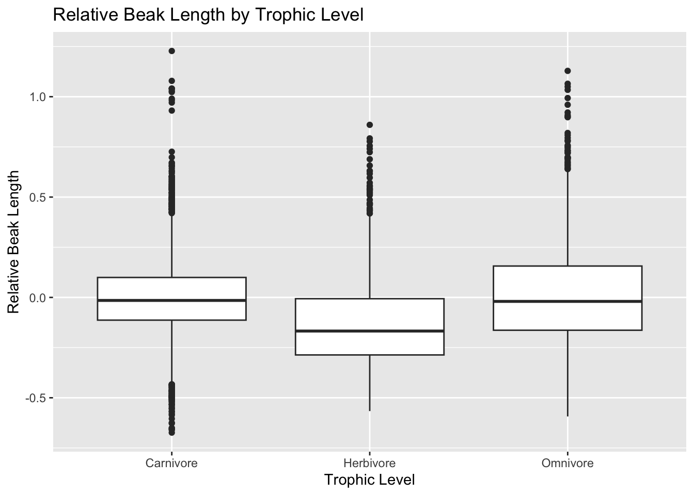
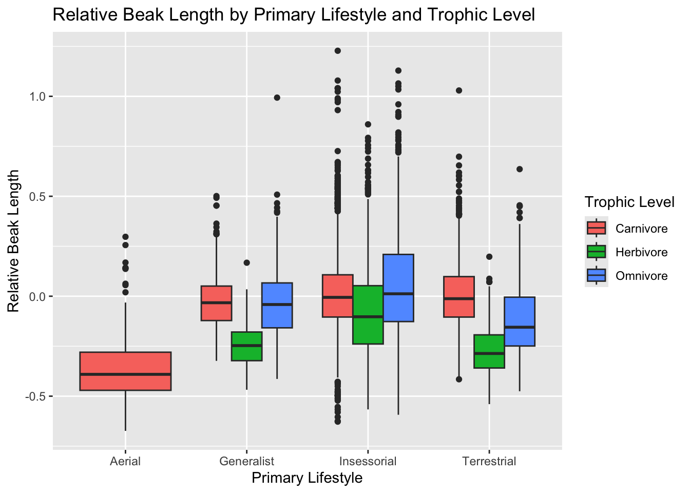

Using the {tidyverse} read_csv() function, load the “AVONETdataset1.csv” dataset from this URL as a “tibble” named d. As discussed in class, this is a recently published dataset that compiles morphological measurements and information on various ecological variables and geographic range data for more than 11,000 species of birds.
Winnow the dataset to include only the following variables: Species1, Family1, Order1, Beak.Length_Culmen, Beak.Width, Beak.Depth, Tarsus.Length, Wing.Length, Tail.Length, Mass, Habitat, Migration, Trophic.Level, Trophic.Niche, Min.Latitude, Max.Latitude, Centroid.Latitude, Primary.Lifestyle, ** and Range.Size
Do a bit of exploratory data analysis with this dataset, e.g., using the {skimr} package. Which of the variables are categorical and which are numeric?
library(tidyverse)
── Attaching core tidyverse packages ──────────────────────── tidyverse 2.0.0 ──
✔ dplyr 1.1.4 ✔ readr 2.1.5
✔ forcats 1.0.0 ✔ stringr 1.5.1
✔ ggplot2 3.5.0 ✔ tibble 3.2.1
✔ lubridate 1.9.3 ✔ tidyr 1.3.1
✔ purrr 1.0.2
── Conflicts ────────────────────────────────────────── tidyverse_conflicts() ──
✖ dplyr::filter() masks stats::filter()
✖ dplyr::lag() masks stats::lag()
ℹ Use the conflicted package (<http://conflicted.r-lib.org/>) to force all conflicts to become errors
library(skimr)# Load the datasetf <-"https://raw.githubusercontent.com/difiore/ada-2024-datasets/main/AVONETdataset1.csv"d <-read_csv(f, col_names =TRUE)
Rows: 11009 Columns: 37
── Column specification ────────────────────────────────────────────────────────
Delimiter: ","
chr (13): Species1, Family1, Order1, Avibase.ID1, Mass.Source, Mass.Refs.Oth...
dbl (24): Sequence, Total.individuals, Female, Male, Unknown, Complete.measu...
ℹ Use `spec()` to retrieve the full column specification for this data.
ℹ Specify the column types or set `show_col_types = FALSE` to quiet this message.
# Select the 19 specified variables from the datasetd <- dplyr::select(d, "Species1", "Family1", "Order1", "Beak.Width", "Beak.Depth", "Tarsus.Length", "Wing.Length", "Tail.Length", "Mass", "Habitat", "Migration", "Trophic.Niche", "Min.Latitude", "Trophic.Level", "Max.Latitude", "Centroid.Latitude", "Range.Size", "Beak.Length_Culmen", "Primary.Lifestyle")# Select quantitative variablesquant_vars <- d %>%select_if(is.numeric)# Select categorical variablescat_vars <- d %>%select_if(is.character)# Print categorical variablesprint(cat_vars)
# Perform exploratory data analysis for quantitative variablesskim(quant_vars)
Data summary
Name
quant_vars
Number of rows
11009
Number of columns
12
_______________________
Column type frequency:
numeric
12
________________________
Group variables
None
Variable type: numeric
skim_variable
n_missing
complete_rate
mean
sd
p0
p25
p50
p75
p100
hist
Beak.Width
0
1.00
6.58
5.15
0.70
3.60
5.00
7.70
88.90
▇▁▁▁▁
Beak.Depth
0
1.00
8.06
7.59
1.00
3.80
5.80
9.40
110.90
▇▁▁▁▁
Tarsus.Length
0
1.00
28.73
24.84
2.50
17.40
22.00
31.30
481.20
▇▁▁▁▁
Wing.Length
0
1.00
124.78
93.44
0.10
66.80
91.50
145.50
789.90
▇▂▁▁▁
Tail.Length
0
1.00
86.65
61.08
0.10
50.20
68.70
99.90
812.80
▇▁▁▁▁
Mass
0
1.00
267.15
1883.03
1.90
15.00
35.50
121.00
111000.00
▇▁▁▁▁
Migration
23
1.00
1.29
0.62
1.00
1.00
1.00
1.00
3.00
▇▁▁▁▁
Min.Latitude
57
0.99
-6.44
22.37
-85.58
-21.22
-7.15
8.07
68.08
▁▃▇▃▁
Max.Latitude
57
0.99
11.51
23.32
-65.12
-3.33
9.00
22.07
85.01
▁▃▇▂▁
Centroid.Latitude
57
0.99
2.95
22.07
-71.04
-9.73
-0.22
15.28
78.43
▁▃▇▂▁
Range.Size
57
0.99
2578859.38
7629310.06
0.88
54052.87
416076.61
2187040.21
136304432.20
▇▁▁▁▁
Beak.Length_Culmen
0
1.00
26.36
24.39
4.50
14.70
19.90
28.50
414.20
▇▁▁▁▁
Challenge 1
One-Factor ANOVA and Inference
Step 1
Make boxplots of log(Mass) in relation to Trophic.Level and Migration behavior type. For each plot, drop from the visualization all species records where the categorical variable of interest is missing from the dataset. lso, you will want to convert the variable Migration (which is scored as a number: “1”, “2”, or “3”) from class numeric to either being classified as a factor or as a character (string) variable.A
library(tidyverse)library(skimr)# Read the datasetf <-"https://raw.githubusercontent.com/difiore/ada-2024-datasets/main/AVONETdataset1.csv"d <-read_csv(f, col_names =TRUE)
Rows: 11009 Columns: 37
── Column specification ────────────────────────────────────────────────────────
Delimiter: ","
chr (13): Species1, Family1, Order1, Avibase.ID1, Mass.Source, Mass.Refs.Oth...
dbl (24): Sequence, Total.individuals, Female, Male, Unknown, Complete.measu...
ℹ Use `spec()` to retrieve the full column specification for this data.
ℹ Specify the column types or set `show_col_types = FALSE` to quiet this message.
# Filter out missing valuesfiltered_data <- d %>%filter(!is.na(Trophic.Level) &!is.na(Migration) &!is.na(log(Mass)))# Convert Migration to character variable filtered_data$Migration <-as.character(filtered_data$Migration) # Create boxplotsboxplot(log(Mass) ~ Trophic.Level * Migration, data = filtered_data, main ="Boxplots of log(Mass) by Trophic Level and Migration",xlab ="Trophic Level", ylab ="log(Mass)")

Step 2: a ) Run linear models using the lm() function to look at the relationship between log(Mass) and Trophic.Level and between log(Mass) and Migration.
# Run linear regression model for log(Mass) and Trophic.Levelmodel_trophic <-lm(log(Mass) ~ Trophic.Level, data = filtered_data)# Summary of the modelsummary(model_trophic)
Call:
lm(formula = log(Mass) ~ Trophic.Level, data = filtered_data)
Residuals:
Min 1Q Median 3Q Max
-3.4230 -1.1559 -0.3047 0.9004 7.5525
Coefficients:
Estimate Std. Error t value Pr(>|t|)
(Intercept) 3.80916 0.01970 193.354 < 2e-16 ***
Trophic.LevelHerbivore 0.25566 0.03410 7.498 6.96e-14 ***
Trophic.LevelOmnivore 0.01410 0.04122 0.342 0.732
Trophic.LevelScavenger 4.63107 0.34467 13.436 < 2e-16 ***
---
Signif. codes: 0 '***' 0.001 '**' 0.01 '*' 0.05 '.' 0.1 ' ' 1
Residual standard error: 1.539 on 10982 degrees of freedom
Multiple R-squared: 0.02091, Adjusted R-squared: 0.02064
F-statistic: 78.18 on 3 and 10982 DF, p-value: < 2.2e-16
# Run linear regression model for log(Mass) and Migrationmodel_migration <-lm(log(Mass) ~as.factor(Migration), data = filtered_data)# Summary of the modelsummary(model_migration)
Call:
lm(formula = log(Mass) ~ as.factor(Migration), data = filtered_data)
Residuals:
Min 1Q Median 3Q Max
-3.8924 -1.1769 -0.3088 0.9152 7.8427
Coefficients:
Estimate Std. Error t value Pr(>|t|)
(Intercept) 3.77457 0.01636 230.710 < 2e-16 ***
as.factor(Migration)2 0.75971 0.04731 16.059 < 2e-16 ***
as.factor(Migration)3 0.37647 0.05155 7.303 3.02e-13 ***
---
Signif. codes: 0 '***' 0.001 '**' 0.01 '*' 0.05 '.' 0.1 ' ' 1
Residual standard error: 1.535 on 10983 degrees of freedom
Multiple R-squared: 0.02563, Adjusted R-squared: 0.02546
F-statistic: 144.5 on 2 and 10983 DF, p-value: < 2.2e-16
b ) Examine the output of the resultant linear models. Is log(Mass) associated with either Trophic.Level or Migration category? That is, in the global test of significance, is the F statistic large enough to reject the null hypothesis of an F value of zero?
For the model examining the relationship between log(mass) and Trophic level, the F-statistic is 78.18 with a very small p-value (< 0.001), indicating a statistically significant model (F(3, 10982) = 78.18, p < 0.001). This suggests evidence to reject the null hypothesis of an F value of zero, indicating an association between log(mass) and Trophic level.
Similarly, for the model examining the relationship between log(mass) and Migration, the F-statistic is 144.5 with a very small p-value (< 0.001). This also indicates that the overall model is statistically significant with (F(2, 10983) = 144.5, p < 0.001), providing evidence to reject the null hypothesis of a value of zero, indicating an association between log(mass) and Migration
In conclusion, both Trophic level and Migration are associated with log(mass) based on the F-statistic value.
c) Given the regression coefficients returned for your Migration model, which Migration categor(ies) are different than the reference level? What level is the reference level? Relevel and assess differences among the remaining pair of Migration categories.
Answer: Migration categories 2 and 3 differ significantly from the reference level, which is Migration category 1. This is evident from the significant coefficients for Migration levels 2 and 3 compared to the reference level in the above output (p < 0.001).
To assess the differences between the remaining pair of Migration categories (2 and 3), we can use releveling.
For releveling, we can change the reference level to one of the other categories and compare it against the new reference level. Let’s say we want to compare Migration level 1 against Migration level 2, while keeping migration level 3 as the reference.
# Relevel Migration to compare Migration 1 against Migration 2filtered_data$Migration <-relevel(factor(filtered_data$Migration), ref ="3")# Run the linear regression model model_migration_releveled <-lm(log(Mass) ~as.factor(Migration), data = filtered_data)# Summary of the re-leveled modelsummary(model_migration_releveled)
Call:
lm(formula = log(Mass) ~ as.factor(Migration), data = filtered_data)
Residuals:
Min 1Q Median 3Q Max
-3.8924 -1.1769 -0.3088 0.9152 7.8427
Coefficients:
Estimate Std. Error t value Pr(>|t|)
(Intercept) 4.15104 0.04889 84.909 < 2e-16 ***
as.factor(Migration)1 -0.37647 0.05155 -7.303 3.02e-13 ***
as.factor(Migration)2 0.38324 0.06603 5.804 6.67e-09 ***
---
Signif. codes: 0 '***' 0.001 '**' 0.01 '*' 0.05 '.' 0.1 ' ' 1
Residual standard error: 1.535 on 10983 degrees of freedom
Multiple R-squared: 0.02563, Adjusted R-squared: 0.02546
F-statistic: 144.5 on 2 and 10983 DF, p-value: < 2.2e-16
The output indicates that migration categories 1 and 2 are associated with differences in log(Mass) compared to Migration category 3, which is the reference level in this coding. This association is supported by an extremely low p-value (< 0.001) .
Step 3: Conduct a post-hoc Tukey Honest Significant Differences test to also evaluate which Migration categories differ “significantly” from one another
# Since post-hoc tukey works with aov function, Fit the model using aov()model_migration_aov <-aov(log(Mass) ~as.factor(Migration), data = filtered_data)summary(model_migration_aov)
Df Sum Sq Mean Sq F value Pr(>F)
as.factor(Migration) 2 681 340.5 144.5 <2e-16 ***
Residuals 10983 25882 2.4
---
Signif. codes: 0 '***' 0.001 '**' 0.01 '*' 0.05 '.' 0.1 ' ' 1
# Perform Tukey's HSD test for pairwise comparisonstukey_result <-TukeyHSD(model_migration_aov)tukey_result
Tukey multiple comparisons of means
95% family-wise confidence level
Fit: aov(formula = log(Mass) ~ as.factor(Migration), data = filtered_data)
$`as.factor(Migration)`
diff lwr upr p adj
1-3 -0.3764693 -0.4973105 -0.2556282 0
2-3 0.3832374 0.2284536 0.5380211 0
2-1 0.7597067 0.6488157 0.8705977 0
Interpretation of Post - Hoc Tukey’s test : The difference in log(Mass) between Migration categories 1 and Migration 3 is estimated to be -0.3765, with very small p value (p = 0), indicating a statistically significant difference between these categories. Similarly, the difference in log(Mass) between Migration categories 2 and Migration 3 is estimated to be 0.3832, with very small p-value (p= 0), indicating a statistically significant difference between these categories. Additionally, the difference in log(Mass) between Migration categories 2 and Migration 1 is estimated to be 0.7597, with very small p value (p = 0), indicating a statistically significant difference between these categories. Overall, these results demonstrate significant differences in log(Mass) among all pairs of Migration categories.
Step 4: Use a permutation approach to inference to generate a null distribution of F statistic values for the model of log(Mass) in relation to Trophic.Level and calculate a p value for your original F statistic. You can do this either by programming your own permutation test (e.g., by shuffling values for the predictor or response variable among observations and calculating an F statistic for each replicate) or by using the {infer} workflow and setting calculate(stat=“F”).
# Fit the original linear modeloriginal_model <-lm(log(Mass) ~ Trophic.Level, data = filtered_data)# Calculate the original F statisticoriginal_anova <-anova(original_model)original_F_statistic <- original_anova$F[1]# lets do this using permutation methods# Number of permutationsn_permutations <-1000# Initialize vector to store permuted F statisticspermuted_F_statistics <-numeric(n_permutations)# Permutation testset.seed(123) # for reproducibilityfor (i in1:n_permutations) {# Permute Trophic.Level permuted_data <- filtered_data permuted_data$Trophic.Level <-sample(permuted_data$Trophic.Level)# Fit the permuted linear model permuted_model <-lm(log(Mass) ~ Trophic.Level, data = permuted_data)# Calculate permuted F statistic permuted_anova <-anova(permuted_model) permuted_F_statistics[i] <- permuted_anova$F[1]}# Calculate p-valuep_value <-mean(permuted_F_statistics >= original_F_statistic)p_value
[1] 0
Interpretation:A p-value of 0 indicates that in the permutation test suggests that the likelihood of observing strong association between log(Mass) and Trophic Level by random chance alone is extremely low. Therefore, we reject the null hypothesis and conclude that there is a significant relationship between log(Mass) and Trophic Level.
CHALLANGE 2
Step 1: Create the following two new variables and add them to AVONET data-set.
Relative beak length, which you should calculate as the residual of log(Beak.Length_Culmen) on log(Mass).
Relative tarsus length, which you should calculate as the residual of log(Tarsus.Length) on log(Mass).
library(tidyverse)library(dplyr)# Fit linear models for log(Beak.Length_Culmen) and log(Tarsus.Length) as functions of log(Mass)beak_model <-lm(log(Beak.Length_Culmen) ~log(Mass), data = d)tarsus_model <-lm(log(Tarsus.Length) ~log(Mass), data = d)# Extract residualsbeak_residuals <-residuals(beak_model)tarsus_residuals <-residuals(tarsus_model)# Add the residuals as new variables to the AVONET datasetd <- d %>%mutate(Relative_Beak_Length = beak_residuals,Relative_Tarsus_Length = tarsus_residuals)d
Make a boxplot or violin plot of your new relative tarsus length variable in relation to Primary.Lifestyle and of your new relative beak length variable in relation to Trophic.Niche.
library(ggplot2)# Remove missing values from Trophic Nichefiltered_data <- d[!is.na(d$Trophic.Niche), ]# Boxplot of relative tarsus length variable in relation to Primary Lifestyleggplot(filtered_data, aes(x = Primary.Lifestyle, y = Relative_Tarsus_Length)) +geom_boxplot(fill ="skyblue", color ="blue") +labs(x ="Primary Lifestyle", y ="Relative Tarsus Length") +theme_minimal() +theme(axis.text.x =element_text(angle =45, hjust =1))

# Violin plot of relative beak length variable in relation to Trophic Nicheggplot(filtered_data, aes(x = Trophic.Niche, y = Relative_Beak_Length)) +geom_violin(fill ="lightgreen", color ="darkgreen") +labs(x ="Trophic Niche", y ="Relative Beak Length") +theme_minimal() +theme(axis.text.x =element_text(angle =45, hjust =1))

Step 3: a) Run an ANOVA analyses to look at the association between geographic range size and the variable Migration. You should first drop those observations for which Migration is not scored and also look at the distribution of the variable Range.Size to decide whether and how it might need to be transformed. Based on the global model, is range size associated with form of migration? How much of the variance in your measure of range size is associated with Migration behavior style?
library(tidyverse)library(effectsize)# Drop observations where Migration is not scoredfiltered_data <- filtered_data[!is.na(filtered_data$Migration), ]# Check the distribution of Range.Sizehist(filtered_data$Range.Size, main ="Distribution of Range Size")# Distribution is positively skewed, lets do log transformation of the data# Apply log transformation to Range.Sizefiltered_data$log_Range_Size <-log(filtered_data$Range.Size)# Check the distribution of log-transformed Range.Sizehist(filtered_data$log_Range_Size, main ="Distribution of Log-Transformed Range Size")# Distribution has been approximating normal with log transformation# Fit the linear regression model (global model)model <-lm(log(Range.Size) ~as.factor(Migration), data = filtered_data)summary(model)# Calculate effect size (partial eta squared)partial_eta_squared <-eta_squared(model, partial =TRUE)partial_eta_squared
Yes, range size is significantly associated with the form of migration. This is indicated by the highly significant p-value (< 0.001) obtained from the ANOVA analysis (F(2, 10929) = 519.5, p <0.001).The effect size (partial eta squared) for the association between range size and migration behavior style is 0.09. This indicates that approximately 9% of the variance in range size is associated with migration behavior style.
b) Given the regression coefficients returned in output of the model, which Migration categories are different than the reference level? What level is the reference level? Relevel and assess differences among the remaining pair of Migration categories. Also conduct a post-hoc Tukey Honest Significant Differences test to also evaluate which Migration categories differ “significantly” from one another
# In the model provide above, the reference level was 1# Relevel the Migration variable with migration 2 as the reference levelfiltered_data$Migration <-relevel(factor(filtered_data$Migration), ref ="2")# Fit the linear regression modelmodel <-lm(log(Mass) ~ Migration, data = filtered_data)summary(model)
Call:
lm(formula = log(Mass) ~ Migration, data = filtered_data)
Residuals:
Min 1Q Median 3Q Max
-3.8924 -1.1774 -0.3084 0.9136 7.8432
Coefficients:
Estimate Std. Error t value Pr(>|t|)
(Intercept) 4.53428 0.04440 102.133 < 2e-16 ***
Migration1 -0.76016 0.04732 -16.065 < 2e-16 ***
Migration3 -0.38324 0.06604 -5.803 6.7e-09 ***
---
Signif. codes: 0 '***' 0.001 '**' 0.01 '*' 0.05 '.' 0.1 ' ' 1
Residual standard error: 1.535 on 10978 degrees of freedom
(18 observations deleted due to missingness)
Multiple R-squared: 0.02567, Adjusted R-squared: 0.02549
F-statistic: 144.6 on 2 and 10978 DF, p-value: < 2.2e-16
Tukey multiple comparisons of means
95% family-wise confidence level
Fit: aov(formula = log(Mass) ~ Migration, data = filtered_data)
$Migration
diff lwr upr p adj
1-2 -0.7601622 -0.8710742 -0.6492503 0
3-2 -0.3832374 -0.5380450 -0.2284297 0
3-1 0.3769249 0.2560616 0.4977882 0
In the output of the model, Migration2 and Migration3 have coefficients that are different from zero, indicating that these categories are different from the reference level with p value <0.001.The reference level is Migration1. The data has been re-leveled, with Migration 2 serving as the reference level. The Migration categories 1 and 3 are found to be different from the reference level (Migration category 2) with p value <0.001. The Tukey HSD test results indicate significant differences in log(Mass) means among all pairs of Migration categories (1-2, 3-2, and 3-1) with p value of 0. Therefore, all Migration categories exhibit statistically significant differences in log(Mass), as indicated by both the regression coefficients and the post-hoc Tukey HSD test.
Step 4: Winnow your original data to just consider birds from the Infraorder “Passeriformes” (song birds).
Run separate one-factor ANOVA analyses to look at the association between [1] relative beak length and Primary.Lifestyle and between [2] relative beak length and Trophic.Level. In doing so…
Make boxplots of response variable by each predictor and by the combination of predictors.
Run linear models for each predictor separately and interpret the model output.
library(tidyverse)# Step 1: Filter original data for birds from the Infraorder "Passeriformes"passeriformes_data <- filtered_data %>%filter(Order1 =="Passeriformes")# Step 2: Boxplots of response variable by each predictor and by combination of predictors# Boxplot of relative beak length by Primary Lifestyleggplot(passeriformes_data, aes(x = Primary.Lifestyle, y = Relative_Beak_Length)) +geom_boxplot() +labs(title ="Relative Beak Length by Primary Lifestyle",x ="Primary Lifestyle",y ="Relative Beak Length")

# Boxplot of relative beak length by Trophic Levelggplot(passeriformes_data, aes(x = Trophic.Level, y = Relative_Beak_Length)) +geom_boxplot() +labs(title ="Relative Beak Length by Trophic Level",x ="Trophic Level",y ="Relative Beak Length")

# Boxplot of relative beak length by combination of Primary Lifestyle and Trophic Levelggplot(passeriformes_data, aes(x = Primary.Lifestyle, y = Relative_Beak_Length, fill = Trophic.Level)) +geom_boxplot(position ="dodge") +labs(title ="Relative Beak Length by Primary Lifestyle and Trophic Level",x ="Primary Lifestyle",y ="Relative Beak Length",fill ="Trophic Level")

# Step 3: Run linear models for each predictor separately and interpret the model output# Linear regression model for Primary Lifestylemodel_primary_lifestyle <-lm(Relative_Beak_Length ~ Primary.Lifestyle, data = passeriformes_data)summary(model_primary_lifestyle)
Call:
lm(formula = Relative_Beak_Length ~ Primary.Lifestyle, data = passeriformes_data)
Residuals:
Min 1Q Median 3Q Max
-0.6314 -0.1380 -0.0172 0.1118 1.2241
Coefficients:
Estimate Std. Error t value Pr(>|t|)
(Intercept) -0.34950 0.02158 -16.19 <2e-16 ***
Primary.LifestyleGeneralist 0.27926 0.02306 12.11 <2e-16 ***
Primary.LifestyleInsessorial 0.35342 0.02181 16.20 <2e-16 ***
Primary.LifestyleTerrestrial 0.27924 0.02249 12.42 <2e-16 ***
---
Signif. codes: 0 '***' 0.001 '**' 0.01 '*' 0.05 '.' 0.1 ' ' 1
Residual standard error: 0.2158 on 6610 degrees of freedom
Multiple R-squared: 0.05581, Adjusted R-squared: 0.05538
F-statistic: 130.2 on 3 and 6610 DF, p-value: < 2.2e-16
# Linear regression model for Trophic Levelmodel_trophic_level <-lm(Relative_Beak_Length ~ Trophic.Level, data = passeriformes_data)summary(model_trophic_level)
Call:
lm(formula = Relative_Beak_Length ~ Trophic.Level, data = passeriformes_data)
Residuals:
Min 1Q Median 3Q Max
-0.67045 -0.13692 -0.02063 0.11129 1.23116
Coefficients:
Estimate Std. Error t value Pr(>|t|)
(Intercept) -0.003170 0.003501 -0.906 0.36518
Trophic.LevelHerbivore -0.118713 0.006956 -17.066 < 2e-16 ***
Trophic.LevelOmnivore 0.017902 0.006606 2.710 0.00675 **
---
Signif. codes: 0 '***' 0.001 '**' 0.01 '*' 0.05 '.' 0.1 ' ' 1
Residual standard error: 0.2165 on 6611 degrees of freedom
Multiple R-squared: 0.05001, Adjusted R-squared: 0.04972
F-statistic: 174 on 2 and 6611 DF, p-value: < 2.2e-16
INTERPRETATION OF MODEL:
For the primary lifestyle and relative beak length the (F (3, 6602) = 128.9) , p-value (< 0.001)) indicates that the model is statistically significant, suggesting that there is a relationship between Primary Lifestyle and Relative Beak Length. Similarly, for the trophic level and relative beak length , the (F (2, 6603) = 174.3) , p-value (< 0.001)) indicates that the model is statistically significant, suggesting that there is a relationship between trophic level and Relative Beak Length.
Step 5:Run a two-factor model to look at the association between relative beak length and both Primary.Lifestyle and Trophic.Level among the passeriforms. Based on the model output, what would you conclude about how relative beak length is related to these two variables?
# Run a linear regression model without interaction termmodel <-lm(Relative_Beak_Length ~ Primary.Lifestyle + Trophic.Level, data = passeriformes_data)# View the model summarysummary(model)
Call:
lm(formula = Relative_Beak_Length ~ Primary.Lifestyle + Trophic.Level,
data = passeriformes_data)
Residuals:
Min 1Q Median 3Q Max
-0.65365 -0.13329 -0.02284 0.10274 1.20180
Coefficients:
Estimate Std. Error t value Pr(>|t|)
(Intercept) -0.349502 0.020958 -16.677 <2e-16 ***
Primary.LifestyleGeneralist 0.301517 0.022582 13.352 <2e-16 ***
Primary.LifestyleInsessorial 0.375698 0.021295 17.642 <2e-16 ***
Primary.LifestyleTerrestrial 0.302119 0.021942 13.769 <2e-16 ***
Trophic.LevelHerbivore -0.126397 0.006761 -18.695 <2e-16 ***
Trophic.LevelOmnivore 0.012140 0.006450 1.882 0.0599 .
---
Signif. codes: 0 '***' 0.001 '**' 0.01 '*' 0.05 '.' 0.1 ' ' 1
Residual standard error: 0.2096 on 6608 degrees of freedom
Multiple R-squared: 0.11, Adjusted R-squared: 0.1093
F-statistic: 163.4 on 5 and 6608 DF, p-value: < 2.2e-16
INTERPRETATION: The linear model examining the association between relative beak length and both Primary.Lifestyle and Trophic.Level among the passeriforms reveals several significant findings. Each level of Primary.Lifestyle (Generalist, Insessorial, Terrestrial) demonstrates a significant difference in intercept compared to the reference level, suggesting distinct baseline relative beak lengths for each category (p < 0.001). Similarly, Trophic.Level Herbivore exhibits a unique intercept, indicating varying baseline relative beak lengths for these categories compared to the reference level (p < 0.001). However, the coefficient for Trophic.Level Omnivore, does not reach statistical significance with the p value >0.05. Overall, the model is statistically significant (F = 162.5, p-value < 0.001), and it explains approximately 10.9% of the variance in relative beak length among passeriforms.
STEP 6:Finally, run an additional two-way model with the same dataset and predictors, but adding the possibility of an interaction term. To do this, you should modify your model formula using the colon operator (:) to specify the interaction, e.g., relative beak length ~ Primary.Lifestyle + Trophic.Level + Primary.Lifestyle:Trophic.Level. Based on the model output, what would you now conclude about how relative beak length is related to these two variables?
# Run a linear regression model with interaction term model <-lm(Relative_Beak_Length ~ Primary.Lifestyle + Trophic.Level + Primary.Lifestyle:Trophic.Level, data = passeriformes_data)# View the model summarysummary(model)
Call:
lm(formula = Relative_Beak_Length ~ Primary.Lifestyle + Trophic.Level +
Primary.Lifestyle:Trophic.Level, data = passeriformes_data)
Residuals:
Min 1Q Median 3Q Max
-0.64623 -0.12836 -0.02078 0.10070 1.21924
Coefficients: (2 not defined because of singularities)
Estimate Std. Error t value
(Intercept) -0.34950 0.02066 -16.918
Primary.LifestyleGeneralist 0.33010 0.02367 13.948
Primary.LifestyleInsessorial 0.35826 0.02104 17.031
Primary.LifestyleTerrestrial 0.35714 0.02210 16.162
Trophic.LevelHerbivore -0.27502 0.01562 -17.608
Trophic.LevelOmnivore -0.11080 0.01550 -7.150
Primary.LifestyleGeneralist:Trophic.LevelHerbivore 0.05033 0.02584 1.948
Primary.LifestyleInsessorial:Trophic.LevelHerbivore 0.20115 0.01750 11.494
Primary.LifestyleTerrestrial:Trophic.LevelHerbivore NA NA NA
Primary.LifestyleGeneralist:Trophic.LevelOmnivore 0.09898 0.02351 4.210
Primary.LifestyleInsessorial:Trophic.LevelOmnivore 0.15527 0.01726 8.996
Primary.LifestyleTerrestrial:Trophic.LevelOmnivore NA NA NA
Pr(>|t|)
(Intercept) < 2e-16 ***
Primary.LifestyleGeneralist < 2e-16 ***
Primary.LifestyleInsessorial < 2e-16 ***
Primary.LifestyleTerrestrial < 2e-16 ***
Trophic.LevelHerbivore < 2e-16 ***
Trophic.LevelOmnivore 9.61e-13 ***
Primary.LifestyleGeneralist:Trophic.LevelHerbivore 0.0515 .
Primary.LifestyleInsessorial:Trophic.LevelHerbivore < 2e-16 ***
Primary.LifestyleTerrestrial:Trophic.LevelHerbivore NA
Primary.LifestyleGeneralist:Trophic.LevelOmnivore 2.59e-05 ***
Primary.LifestyleInsessorial:Trophic.LevelOmnivore < 2e-16 ***
Primary.LifestyleTerrestrial:Trophic.LevelOmnivore NA
---
Signif. codes: 0 '***' 0.001 '**' 0.01 '*' 0.05 '.' 0.1 ' ' 1
Residual standard error: 0.2066 on 6604 degrees of freedom
Multiple R-squared: 0.1358, Adjusted R-squared: 0.1346
F-statistic: 115.3 on 9 and 6604 DF, p-value: < 2.2e-16
INTERPRETATION OF RESULT: Each level of Primary.Lifestyle (Generalist, Insessorial, Terrestrial) is associated with a distinct intercept, indicating the baseline relative beak length for each category compared to the reference level (p < 0.001). Similarly, each level of Trophic.Level (Herbivore, Omnivore) is associated with a different intercept, signifying the baseline relative beak length for each category compared to the reference level (p < 0.001).The coefficient of the interaction effect implies that there is no statistically significant impact on relative beak length when both the bird’s Primary Lifestyle is Generalist and the Trophic Level is Herbivore (p = 0.0538). However, all other coefficients suggest an additional effect on relative beak length when the bird’s Primary Lifestyle is Generalist, Insessorial, or Terrestrial, and its Trophic Level is Omnivore or Herbivore (p < 0.001).
The model demonstrates a moderate level of explanatory capability, as indicated by the multiple R-squared value of 13.57%. This suggests that approximately 13.57% of the variance in relative beak length is accounted for by the predictors included in the model. . Furthermore, the F-statistic, with a notably low p-value (< 0.001), confirms the overall significance of the model.
Step 7: Use the interaction.plot() function to visualize the interaction between Primary.Lifestyle and Trophic.Level.